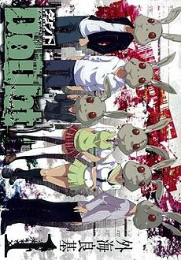

Alternative Names: Rabbit DoubtAuthor(s): Tonogai Yoshiki
Genres: Drama, Horror, Mystery, Psychological, Shounen, Tragedy
Release: 2007
Status: Complete
Type: Manga
Length: 4 Volumes 20 Chapters
Read Online @:

More Infor @:

Notes
This one is kind of creepy...Theres a game going around called "Rabbit Doubt" and the gist of it is that everyone in the game makes up a rabbit colony, but one of the "rabbits" is selected randomly to become a "wolf" that kills off 1 rabbit per round. The objective is to find the wolf before all the rabbis get killed... Talk about a creepy game. Well a group of players decided to meet in person, but what happens when one of them chooses to become the wolf??